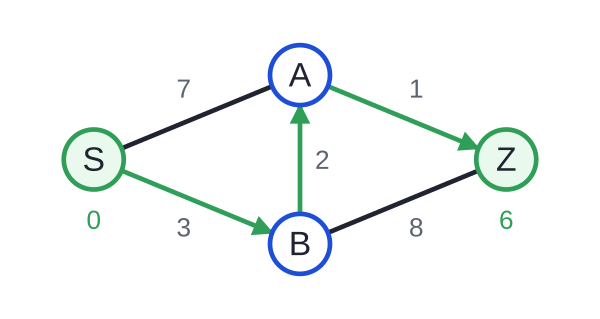

Du gibst im Navi „Hauptbahnhof Dresden“ ein, und nach Sekundenbruchteilen steht die schnellste Route fest – obwohl das Straßennetz Hunderttausende Kreuzungen hat. Dahinter steckt das Kürzeste-Wege-Problem: In einem gewichteten Graphen soll ein Weg mit minimaler Summe der Kantengewichte gefunden werden.
Diese Seite ist ein Lernpfad in vier Schritten. Schritt 1 ist ein Lesetext zum Algorithmus von Moore. Die Schritte 2 bis 4 haben dieselbe Form: Erst liest du kurz, worum es geht, dann zeigt dir ein Video (1–2 min, ohne Ton) die Idee oder den Code in Thonny, dann prüfst du mit einer kleinen Frage, ob du es verstanden hast.
Zum Mittippen: 3_graphen/dijkstra.py – neu anlegen, weiter in Aufgabe 3.9.2.
Commit nach jedem Schritt mit Code, z. B. 3.9 Schritt 3: dijkstra mit Beispielgraph (Regeln auf Seite 3.0.2)
Am Ende findest du den Praxisbezug und alle Aufgaben.
Erläuterung: Der Algorithmus von Moore – meist als Bellman-Ford- oder Moore-Bellman-Ford-Algorithmus bezeichnet – löst das Kürzeste-Wege-Problem von einem Startknoten aus. Er kann mit negativen Gewichten umgehen, solange keine negativen Zyklen existieren. Negative Gewichte ergeben nur in gerichteten Graphen Sinn: In einem ungerichteten Graphen wäre jede negative Kante u–v schon ein negativer Zyklus (u → v → u), und der „kürzeste Weg“ wäre beliebig kurz.
Schritt-für-Schritt-Anleitung:
Weiter mit Schritt 2: Dijkstra an einem Beispiel →
Erläuterung: Der Algorithmus von Edsger W. Dijkstra (1959) findet in einem gewichteten Graphen mit nichtnegativen Kantengewichten die kürzesten Wege von einem Startknoten zu allen anderen Knoten. Er nutzt eine Greedy-Strategie: Es wird stets der Knoten mit der geringsten vorläufigen Distanz als Nächstes endgültig festgelegt.

Die Greedy-Strategie („gierig“) ist ein algorithmisches Paradigma, das ein Problem durch eine Folge von Entscheidungen löst, bei der in jedem Schritt die lokal beste Wahl getroffen wird (z. B. der Knoten mit der kleinsten Distanz). Frühere Entscheidungen werden nie zurückgenommen. Das führt nicht bei jedem Problem zum Optimum; bei Dijkstra mit nichtnegativen Gewichten aber schon, denn ein Umweg kann dann nie kürzer werden als die bereits kleinste Distanz.
Schritt-für-Schritt-Anleitung:
Im Video läuft der Algorithmus an Beispiel 2 Schritt für Schritt, mit der Tabelle in Prüfungsform daneben. Achte darauf, welcher Knoten jeweils fertig wird, wo eine Distanz verbessert wird – und wie man am Ende den Weg über die Vorgänger abliest.
Zum Nachlesen: dieselbe Rechnung als Tabelle mit Erklärungen und der Python-Code, den du in den Schritten 3 und 4 genauer kennenlernst.
Auf der Zusatzseite „3.9 Zusatz: Dijkstra Schritt für Schritt“ gibt es einen Simulator. Mit ihm klickst du Beispiel 2 Aktion für Aktion durch und siehst dabei die Tabelle und den Python-Code. Du kannst auch eigene Graphen eingeben, zum Beispiel aus Aufgabe 3.9.1, und deine Tabelle damit kontrollieren.
Danach: Aufgabe 3.9.1 – Dijkstra von Hand in einer Tabelle.
Weiter mit Schritt 3: Dijkstra im Code – der Aufbau →
Der Python-Code am Ende von Beispiel 2 macht genau das, was du von Hand in der Tabelle machst: (1) alle Distanzen auf unendlich setzen, (2) in einer Schleife den offenen Knoten mit der kleinsten Distanz suchen, (3) ihn in die Liste fertig aufnehmen, (4) seine Nachbarn relaxieren. Neu sind nur zwei Kleinigkeiten: float("inf") steht für „unendlich“, und graph[u][v] ist das Gewicht der Kante von u nach v. dijkstra füllt die beiden leeren Dictionaries dist und vorgaenger, die man ihr übergibt. Im Video probierst du die Bausteine in der Kommandozeile aus.
Jetzt du – mittippen: Lege 3_graphen/dijkstra.py an und tippe den Code aus dem Video ab: die Funktion dijkstra. Starte mit F5 und vergleiche die Ausgabe mit dem Video. Danach committen, z. B. 3.9 Schritt 3: dijkstra angelegt.
Weiter mit Schritt 4: Dijkstra im Code Schritt für Schritt →
Jetzt läuft dijkstra(graph, "A", dist, vorgaenger) Zeile für Zeile. Rechts siehst du dist, vorgaenger und die Liste fertig. Achte darauf, wie in jeder Runde zuerst der kleinste offene Knoten gesucht wird – und an welchen Stellen eine schon eingetragene Distanz durch eine kleinere ersetzt wird. Das sind genau die Stellen, die in der Tabelle „verbessert“ heißen.
Im gerichteten Beispiel oben (A→B 4, A→C 5, C→B −3, B→D 2) legt Dijkstra zuerst A fest, dann B mit Distanz 4 (kleiner als C mit 5); dabei erhält D den vorläufigen Wert 6. Danach wird C festgelegt und der kürzere Weg A → C → B mit Länge 2 entdeckt – B ist aber schon „fertig“ und wird nicht mehr verbessert. Zuletzt wird D mit dem falschen Wert 6 statt 4 festgelegt. Bei negativen Gewichten braucht man deshalb Moore-Bellman-Ford.
Danach: Aufgabe 3.9.2 – den Weg aus vorgaenger rekonstruieren, und Aufgabe 3.9.3 – Dijkstra oder Moore? Verfahren beurteilen.
Alltag: Navigations-Apps berechnen Routen auf einem gerichteten Graphen: Kreuzungen sind Knoten, Straßenabschnitte sind Kanten, die Gewichte sind Fahrzeiten, die sich mit aktuellen Staumeldungen ändern. Weil Fahrzeiten nie negativ sind, arbeiten sie mit Dijkstra bzw. mit schnelleren Varianten wie A*, die zusätzlich die Luftlinie zum Ziel berücksichtigen. Auch die Fahrplanauskunft von Bus und Bahn sucht kürzeste Wege – mit Umsteigezeiten als Kantengewichten.
Beruf: Im Internet berechnen Router mit dem Protokoll OSPF per Dijkstra die besten Wege für Datenpakete; Netzwerkadministratorinnen und -administratoren stellen dafür die Kantengewichte („Kosten“) der Leitungen ein. Das Protokoll RIP arbeitet dagegen nach dem Bellman-Ford-Prinzip. Logistikunternehmen und Entwicklerteams von Kartendiensten optimieren diese Verfahren, damit Millionen Routenanfragen pro Tag in Millisekunden beantwortet werden.
Kantenrelaxation (Kante „entspannen“): Für eine Kante u → v mit Gewicht w wird geprüft, ob der Weg über u kürzer ist als der bisher bekannte: Ist dist[u] + w < dist[v], setze dist[v] = dist[u] + w und merke u als Vorgänger von v.
Moore-Bellman-Ford: relaxiert (n − 1)-mal alle Kanten. Er funktioniert auch mit negativen Kantengewichten, solange es keinen negativen Zyklus gibt. Laufzeit O(Knoten · Kanten).
Dijkstra: wählt immer den noch nicht fertigen Knoten mit der kleinsten Distanz, legt diese endgültig fest und relaxiert seine ausgehenden Kanten. Er ist schneller, liefert aber nur bei nichtnegativen Kantengewichten garantiert korrekte Ergebnisse.
Ein gerichteter Graph hat die Kanten S→A (3), S→B (5) und B→A (−4). Relaxiere in Runde 1 in dieser Reihenfolge: S→A, S→B, B→A. Gib nach Runde 1 für A und B „Distanz / Vorgänger“ an. Ändert sich in Runde 2 noch etwas?
S→A: A = 3 / S. S→B: B = 5 / S. B→A: 5 + (−4) = 1 < 3, also A = 1 / B. In Runde 2 ändert sich nichts mehr – fertig. Kürzester Weg nach A: S → B → A mit Länge 1.
Ein ungerichteter Graph hat die Kanten S–A (1), S–B (4), A–B (2) und B–Z (1). Start ist S. In welcher Reihenfolge werden die Knoten fertig? Wie lang ist der kürzeste Weg nach Z, und welcher ist es?
Reihenfolge: S (0), A (1), B (3 / A – verbessert von 4 / S), Z (4 / B). Kürzester Weg S → A → B → Z mit 1 + 2 + 1 = 4.